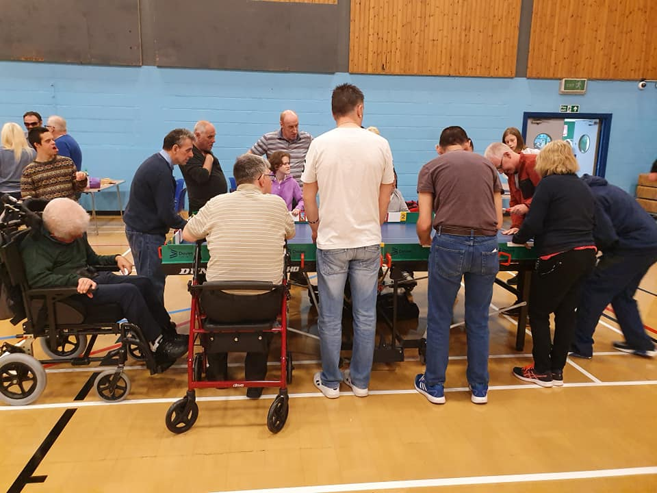

Westquarter and Redding CC are one of Scotland’s clubs pushing to make cricket more inclusive.
Based near Falkirk, they won Cricket Scotland’s Equality, Diversity and Inclusion award in 2019, and for good reason.
They have reached out into the community, promoting female cricket, running multiple disability sessions, and also helping local people living with dementia.
The club’s secretary Stephen Sutton said: “Our belief is that being inclusive is not about welcoming everyone who comes to the club but being proactive and reaching out to find underrepresented people and groups, and working with them to give them the same opportunity irrespective of race, religion, ethnicity, gender or background.”
Cricket Scotland have recently adopted an ECB programme called Disability Cricket Champion Club, and earlier this year Westquarter were named as one of the first three champion clubs alongside Strathmore and Dumfries.
This is due to programmes such as Table Cricket, which Lord’s Taverners describe as “an adapted version of cricket played on a table tennis table, specifically designed to give young people with a disability the chance to play in the sport we all love.” Alongside this, in 2019 Westquarter set up Enhanced Provision All Stars which runs in Falkirk’s primary schools and has been adopted by Cricket Scotland in their disability pathway.
Barry McGeachy has been Cricket Scotland’s Disability Development Officer since January 2020, and he told me how crucial this work is: “It’s about making the pathway more sustainable. It’s all well and good having hubs and running taster sessions, but disability is a long-term game. You can’t just go, ‘right, let’s get disability cricket on’. You need so much commitment. The individuals [taking part] are habitual – they need to get to trust it and know that it’s on week in week out.”
One would imagine that taking on a job just before Covid struck would have been difficult, but Barry viewed it as a positive: “It was a chance to hit the reset button. Things were kind of disjointed – we had a hub in Edinburgh, and stuff in Inverness, but none of it was linked. I got to go ‘where is everything? What’s happening and where, and who are the main players?’”
With the return of cricket this summer, Barry has been able to perform the key part of his job, which is to help clubs envisage and provide disability cricket, whether that’s through infrastructure, coaching, or taster sessions. This month has seen the first Beyond Boundaries Festival, hosted by Dumfries CC, and going forward Barry hopes that successful events like this will see disability cricket continue to grow.

He is keen not to rush things, but ultimately ambitions are high: “I want it to grow at its own pace, but the aim is to have national teams – 80% come and partake for the social aspect, but then you’ve got the 20% who are athletes, and they’re really good at what they do. There was a lad [at Dumfries] whose hand-eye was incredible. These players are out there, and we want to get these teams together.”
Barry also stressed the importance of making cricket as accessible as possible, and engaging ethnic minorities. Wicketz is a Lord’s Taverners programme which runs throughout the UK, and is aimed at young people living in impoverished areas.
“10 years ago, saying cricket was a community sport would’ve been pushing it. Now it’s in the community; programmes such as Wicketz, and what Nauman [Javaid] is doing in Glasgow, mean it’s now in the demographics that play cricket”, Barry says. “There’s a large Asian community that had probably been ignored, but they’ve been embraced now, and from that the Glasgow disability hub has arisen. These programmes allow us to reach these people.”
It is vital too that these different groups mix, and that diversity within cricket becomes normalised. That starts in youth cricket at grassroots level. “[My son] plays with an autistic boy who goes to disability sessions, but he also plays with the mainstream U10s team”, Barry says. “It’s important that that happens; don’t keep those with disabilities in disability teams, or girls in girls’ teams. If it’s safe then get them in. He has a blast, and it educates the other kids as well.”